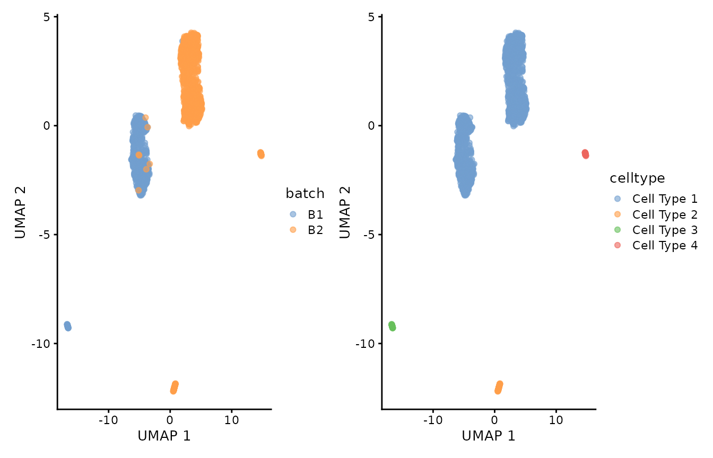

vignettes/articles/SingleCellExperiment.Rmd
SingleCellExperiment.RmdIn this vignette, we demonstrate how to use Canek to
correct batch effects from SingleCellExperiment objects
following the recommendations from Bioconductor
multi-sample analysis. The toy data sets used in this vignette are
included in the Canek R package.
#Create independent SingleCellExperiment objects
sce <- lapply(names(Canek::SimBatches$batches), function(batch) {
counts <- SimBatches$batches[[batch]] #get the counts
SingleCellExperiment(list(counts=counts), #create the sce object
mainExpName = "example_sce")
})
#Add batch labels
names_batch <- c("B1", "B2")
names(sce) <- names_batch
sce$B1[["batch"]] <- "B1"
sce$B2[["batch"]] <- "B2"
#Add cell-type labels (included in Canek's package)
celltypes <- Canek::SimBatches$cell_types
ct_B1_idx <- 1:ncol(sce$B1)
ct_B2_idx <- (ncol(sce$B1)+1):length(celltypes)
sce$B1[["celltype"]] <- celltypes[ct_B1_idx]
sce$B2[["celltype"]] <- celltypes[ct_B2_idx]Let’s check the cells distribution across batches.
In the pre-processing steps, we perform the normalization of counts and the variance analysis of genes independently for each batch. Then, we find common variable genes to use in downstream analyses.
We perform scaling normalization within each batch using the
multiBatchNorm function from batchelor
Bioconductor package.
sce <- batchelor::multiBatchNorm(sce[["B1"]], sce[["B2"]])
names(sce) <- names_batchWe use the combineVar function from scran
Bioconductor package. This function receives independent variance models
of genes for each of the batches. This allows us to select highly
variable genes while preserving within-batch differences.
We found 273 combined variable features.
#Get independent features' variant models
sce_var <- lapply(X = sce, FUN = scran::modelGeneVar)
#Combine the independent variables
combined_features <- scran::combineVar(sce_var[["B1"]], sce_var[["B2"]])
#Select features using the `bio` statistics (see combineVar documentation for further details)
combined_features <- combined_features$bio > 0
sum(combined_features)
#> [1] 273Then, we merge the two datasets and use the combined variable features for the Principal Components Analysis.
uncorrected <- cbind(sce[["B1"]], sce[["B2"]])
uncorrected <- scater::runPCA(x = uncorrected[combined_features,], scale = TRUE)Let’s check out the elbow plot of the PCs.
pca_uncorrected <- SingleCellExperiment::reducedDim(x = uncorrected, type = "PCA")
variance <- apply(X = pca_uncorrected, MARGIN = 2, FUN = var)
plot(x = 1:30, y = variance[1:30], xlab = "Principal components", ylab = "Variance")The variance stabilizes after the first seven PCs. In this test, we will use 10 PCs to calculate the UMAP visualization, but feel free to try other numbers.
We can now visualize the uncorrected data by batch and cell-type labels.
p1 <- scater::plotUMAP(object = uncorrected, colour_by="batch")
p2 <- scater::plotUMAP(object = uncorrected, colour_by="celltype")
p1 + p2
We can observe that the cells labeled as Cell Type 1 got divided into two groups that correlated with batch labels. Let’s minimize this batch differences with Canek.
Canek accepts a SingleCellExperiments object with a
batch identifier. We can pass a vector of variable features
to use in the integration.
features <- rownames(uncorrected)[combined_features]
#RunCanek in a list of SingleCellExperiment objects
#corrected <- Canek::RunCanek(x = sce, features = features)
#RunCanek in a single object with a batch identifier
corrected <- Canek::RunCanek(x = uncorrected, batches = "batch", features = features)To perform PCA it’s important to use the corrected log counts. These
are saved in the assay Canek in the
SingleCellExperiment object and can be specified by
changing the exprs_values parameter.
corrected <- scater::runPCA(x = corrected, scale = TRUE, exprs_values = "Canek")Let’s check out the elbow plot after correction.
pca_corrected <- SingleCellExperiment::reducedDim(x = corrected, type = "PCA")
variance <- apply(X = pca_corrected, MARGIN = 2, FUN = var)
plot(x = 1:30, y = variance[1:30], xlab = "Principal components", ylab = "Variance")After correction, the elbow plot has changed and 5 PCs will be enough to calculate the UMAP visualization.
We can now visualize the corrected data by batch and cell-type labels. We can observe that after batch-correction with Canek, we minimize the batch difference in cells from Cell Type 1 while preserving the other cell types.
p1 <- scater::plotUMAP(object = corrected, colour_by="batch")
p2 <- scater::plotUMAP(object = corrected, colour_by="celltype")
p1 + p2## Session info
sessionInfo()
#> R version 4.3.2 (2023-10-31)
#> Platform: x86_64-pc-linux-gnu (64-bit)
#> Running under: Ubuntu 22.04.3 LTS
#>
#> Matrix products: default
#> BLAS: /usr/lib/x86_64-linux-gnu/openblas-pthread/libblas.so.3
#> LAPACK: /usr/lib/x86_64-linux-gnu/openblas-pthread/libopenblasp-r0.3.20.so; LAPACK version 3.10.0
#>
#> locale:
#> [1] LC_CTYPE=C.UTF-8 LC_NUMERIC=C LC_TIME=C.UTF-8
#> [4] LC_COLLATE=C.UTF-8 LC_MONETARY=C.UTF-8 LC_MESSAGES=C.UTF-8
#> [7] LC_PAPER=C.UTF-8 LC_NAME=C LC_ADDRESS=C
#> [10] LC_TELEPHONE=C LC_MEASUREMENT=C.UTF-8 LC_IDENTIFICATION=C
#>
#> time zone: UTC
#> tzcode source: system (glibc)
#>
#> attached base packages:
#> [1] stats4 stats graphics grDevices utils datasets methods
#> [8] base
#>
#> other attached packages:
#> [1] patchwork_1.1.3 scran_1.28.2
#> [3] batchelor_1.16.0 scater_1.28.0
#> [5] ggplot2_3.4.4 scuttle_1.10.3
#> [7] SingleCellExperiment_1.22.0 SummarizedExperiment_1.30.2
#> [9] Biobase_2.60.0 GenomicRanges_1.52.1
#> [11] GenomeInfoDb_1.36.4 IRanges_2.34.1
#> [13] S4Vectors_0.38.2 BiocGenerics_0.46.0
#> [15] MatrixGenerics_1.12.3 matrixStats_1.0.0
#> [17] Canek_0.2.4
#>
#> loaded via a namespace (and not attached):
#> [1] bitops_1.0-7 gridExtra_2.3
#> [3] rlang_1.1.1 magrittr_2.0.3
#> [5] compiler_4.3.2 flexmix_2.3-19
#> [7] DelayedMatrixStats_1.22.6 systemfonts_1.0.5
#> [9] vctrs_0.6.4 stringr_1.5.0
#> [11] pkgconfig_2.0.3 crayon_1.5.2
#> [13] fastmap_1.1.1 XVector_0.40.0
#> [15] labeling_0.4.3 utf8_1.2.4
#> [17] rmarkdown_2.25 ggbeeswarm_0.7.2
#> [19] ragg_1.2.6 numbers_0.8-5
#> [21] purrr_1.0.2 xfun_0.41
#> [23] modeltools_0.2-23 bluster_1.10.0
#> [25] zlibbioc_1.46.0 cachem_1.0.8
#> [27] beachmat_2.16.0 jsonlite_1.8.7
#> [29] highr_0.10 DelayedArray_0.26.7
#> [31] fpc_2.2-10 BiocParallel_1.34.2
#> [33] irlba_2.3.5.1 parallel_4.3.2
#> [35] prabclus_2.3-3 cluster_2.1.4
#> [37] R6_2.5.1 bslib_0.5.1
#> [39] stringi_1.7.12 limma_3.56.2
#> [41] jquerylib_0.1.4 diptest_0.76-0
#> [43] Rcpp_1.0.11 knitr_1.45
#> [45] FNN_1.1.3.2 Matrix_1.6-1.1
#> [47] nnet_7.3-19 igraph_1.5.1
#> [49] tidyselect_1.2.0 viridis_0.6.4
#> [51] abind_1.4-5 yaml_2.3.7
#> [53] codetools_0.2-19 lattice_0.21-9
#> [55] tibble_3.2.1 withr_2.5.2
#> [57] evaluate_0.23 desc_1.4.2
#> [59] mclust_6.0.0 kernlab_0.9-32
#> [61] pillar_1.9.0 generics_0.1.3
#> [63] rprojroot_2.0.3 RCurl_1.98-1.13
#> [65] sparseMatrixStats_1.12.2 munsell_0.5.0
#> [67] scales_1.2.1 class_7.3-22
#> [69] glue_1.6.2 metapod_1.8.0
#> [71] tools_4.3.2 BiocNeighbors_1.18.0
#> [73] robustbase_0.99-0 ScaledMatrix_1.8.1
#> [75] locfit_1.5-9.8 fs_1.6.3
#> [77] cowplot_1.1.1 grid_4.3.2
#> [79] edgeR_3.42.4 colorspace_2.1-0
#> [81] GenomeInfoDbData_1.2.10 beeswarm_0.4.0
#> [83] BiocSingular_1.16.0 vipor_0.4.5
#> [85] cli_3.6.1 rsvd_1.0.5
#> [87] textshaping_0.3.7 fansi_1.0.5
#> [89] viridisLite_0.4.2 S4Arrays_1.0.6
#> [91] dplyr_1.1.3 uwot_0.1.16
#> [93] ResidualMatrix_1.10.0 gtable_0.3.4
#> [95] DEoptimR_1.1-3 sass_0.4.7
#> [97] digest_0.6.33 dqrng_0.3.1
#> [99] ggrepel_0.9.4 farver_2.1.1
#> [101] memoise_2.0.1 htmltools_0.5.6.1
#> [103] pkgdown_2.0.7 lifecycle_1.0.3
#> [105] statmod_1.5.0 MASS_7.3-60